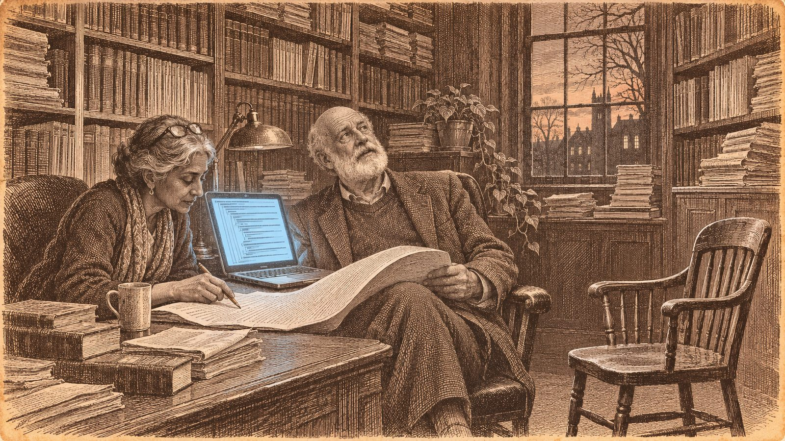

A hypothesis a whole field stood on for 27 years may simply be false

In 1999 Russell Impagliazzo and Ramamohan Paturi gave a name to something most of computer science already took for granted: that some problems, the classic one being 3-SAT, cannot be solved much faster than by trying a fixed fraction of every possibility. The Exponential Time Hypothesis was never proved. Hundreds of results were built on it anyway.
On 26 October OpenAI posted a 67-page paper arguing that it is false, produced by an internal model it has not released. Within hours Anthropic posted its own, credited to an internal Claude research model. Both say the core algorithm was found on 16 October, and both reach the same running time: below exponential, though still far too slow to matter in practice.
Each comes with a Lean formalisation, a program that checks every logical step. Anthropic's notes add that its proof was written by AI models and reviewed by other copies of the same models, and that no person was known to have checked it when it was posted.
OpenAI asked Impagliazzo, Paturi and the MIT complexity theorist Ryan Williams to help interpret the result. In an open letter they said their involvement is no certification of it. Williams had long been a sceptic: in 2019 he put the hypothesis's chance of being true at 70 per cent. Impagliazzo was less cheerful. He said he would rather it had been found by a person who could explain how they got there, and whose hand he could shake.
The result does not settle whether P equals NP. OpenAI's own paper says it does not carry over to hard problems in general.